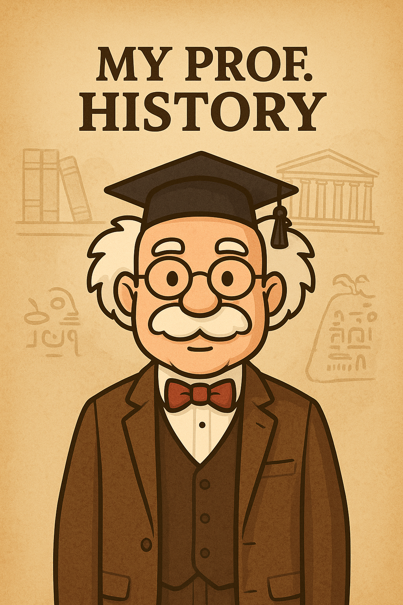

<!DOCTYPE html>
<html lang="de">
<head>
    <meta charset="UTF-8">
    <meta name="viewport" content="width=device-width, initial-scale=1.0">
    <title>My Prof. History - Frankfurt</title>
    
    <!-- Leaflet CSS -->
    <link rel="stylesheet" href="https://unpkg.com/leaflet@1.9.4/dist/leaflet.css" />
    
    <!-- React -->
    <script src="https://unpkg.com/react@18/umd/react.production.min.js"></script>
    <script src="https://unpkg.com/react-dom@18/umd/react-dom.production.min.js"></script>
    <script src="https://unpkg.com/@babel/standalone/babel.min.js"></script>
    
    <!-- Leaflet JS -->
    <script src="https://unpkg.com/leaflet@1.9.4/dist/leaflet.js"></script>
    
    <style>
        * {
            margin: 0;
            padding: 0;
            box-sizing: border-box;
        }
        
        body {
            font-family: 'Georgia', serif;
            background: linear-gradient(135deg, #2c1810 0%, #1a0f0a 100%);
            color: #f4e4c1;
            overflow: hidden;
        }
        
        #root {
            height: 100vh;
            display: flex;
            flex-direction: column;
        }
        
        /* Header */
        .header {
            background: rgba(44, 24, 16, 0.95);
            border-bottom: 3px solid #c9a961;
            padding: 15px 20px;
            box-shadow: 0 4px 20px rgba(0,0,0,0.5);
            position: relative;
            overflow: hidden;
            z-index: 1000;
        }
        
        .header::before {
            content: '';
            position: absolute;
            top: 0;
            left: 0;
            right: 0;
            bottom: 0;
            background: url('data:image/svg+xml,<svg xmlns="http://www.w3.org/2000/svg" viewBox="0 0 100 100"><text y="50" font-size="80" opacity="0.05">📚</text></svg>');
            background-size: 100px;
            pointer-events: none;
        }
        
        .header-content {
            display: flex;
            align-items: center;
            justify-content: center;
            gap: 15px;
            position: relative;
            z-index: 1;
        }
        
        .header-logo {
            width: 60px;
            height: 60px;
            border-radius: 50%;
            border: 3px solid #c9a961;
            background: white;
            padding: 5px;
            box-shadow: 0 4px 15px rgba(0,0,0,0.3);
        }
        
        .header-text {
            display: flex;
            flex-direction: column;
        }
        
        .header h1 {
            font-size: 1.8rem;
            color: #c9a961;
            font-weight: 600;
            letter-spacing: 1px;
            text-shadow: 2px 2px 4px rgba(0,0,0,0.5);
            margin: 0;
        }
        
        .header .subtitle {
            font-size: 0.9rem;
            color: #d4af37;
            margin-top: 5px;
            font-style: italic;
        }
        
        /* Map Container */
        .map-container {
            flex: 1;
            position: relative;
            overflow: hidden;
        }
        
        #map {
            width: 100%;
            height: 100%;
        }
        
        /* Custom Leaflet Controls */
        .leaflet-top.leaflet-right {
            top: 100px;
            right: 10px;
        }
        
        .leaflet-control-zoom {
            border: 2px solid #c9a961 !important;
            border-radius: 8px !important;
            overflow: hidden;
            box-shadow: 0 4px 15px rgba(0,0,0,0.4) !important;
            margin: 0 !important;
        }
        
        .leaflet-control-zoom a {
            background: rgba(44, 24, 16, 0.95) !important;
            color: #c9a961 !important;
            border: none !important;
            font-size: 20px !important;
            font-weight: bold !important;
            width: 40px !important;
            height: 40px !important;
            line-height: 40px !important;
        }
        
        .leaflet-control-zoom a:hover {
            background: rgba(201, 169, 97, 0.3) !important;
            color: #d4af37 !important;
        }
        
        /* User Location Marker */
        .user-location-marker {
            width: 20px;
            height: 20px;
            border-radius: 50%;
            background: #4285f4;
            border: 3px solid white;
            box-shadow: 0 0 10px rgba(66, 133, 244, 0.6);
            animation: pulse-location 2s infinite;
        }
        
        @keyframes pulse-location {
            0%, 100% {
                box-shadow: 0 0 10px rgba(66, 133, 244, 0.6);
            }
            50% {
                box-shadow: 0 0 20px rgba(66, 133, 244, 0.9);
            }
        }
        
        /* Custom Marker */
        .custom-marker {
            background: linear-gradient(135deg, #c9a961 0%, #d4af37 100%);
            width: 30px;
            height: 30px;
            border-radius: 50% 50% 50% 0;
            transform: rotate(-45deg);
            border: 3px solid #1a0f0a;
            box-shadow: 0 4px 10px rgba(0,0,0,0.4);
        }
        
        .custom-marker::after {
            content: '';
            width: 14px;
            height: 14px;
            background: #1a0f0a;
            border-radius: 50%;
            position: absolute;
            top: 50%;
            left: 50%;
            transform: translate(-50%, -50%);
        }
        
        /* Location Card */
        .location-card {
            position: absolute;
            bottom: 0;
            left: 0;
            right: 0;
            background: linear-gradient(to bottom, rgba(44, 24, 16, 0.98), rgba(26, 15, 10, 0.98));
            border-top: 3px solid #c9a961;
            padding: 20px;
            box-shadow: 0 -10px 40px rgba(0,0,0,0.6);
            transform: translateY(0);
            transition: transform 0.3s ease;
            max-height: 45vh;
            overflow-y: auto;
            z-index: 999;
        }
        
        .location-card.hidden {
            transform: translateY(100%);
        }
        
        .location-card h2 {
            color: #c9a961;
            font-size: 1.4rem;
            margin-bottom: 8px;
            border-bottom: 2px solid #c9a961;
            padding-bottom: 8px;
        }
        
        .location-card .distance {
            color: #d4af37;
            font-size: 0.85rem;
            margin-bottom: 12px;
            font-style: italic;
        }
        
        /* Audio Player - Mobile Optimized */
        .audio-player {
            background: rgba(201, 169, 97, 0.1);
            border: 2px solid #c9a961;
            border-radius: 12px;
            padding: 0;
            margin: 15px 0 10px 0;
            position: relative;
            overflow: hidden;
        }
        
        .audio-header {
            padding: 12px 15px 8px 15px;
            border-bottom: 1px solid rgba(201, 169, 97, 0.3);
        }
        
        .audio-title {
            color: #c9a961;
            font-size: 0.85rem;
            font-weight: 600;
            display: flex;
            align-items: center;
            gap: 8px;
        }
        
        .audio-play-section {
            display: flex;
            align-items: center;
            justify-content: center;
            padding: 20px;
            background: rgba(201, 169, 97, 0.05);
        }
        
        .professor-avatar {
            position: absolute;
            top: 50%;
            left: 15px;
            transform: translateY(-50%);
            width: 45px;
            height: 45px;
            border-radius: 50%;
            border: 3px solid #c9a961;
            background: white;
            padding: 3px;
            box-shadow: 0 4px 10px rgba(0,0,0,0.3);
            z-index: 10;
        }
        
        .play-button {
            width: 70px;
            height: 70px;
            border-radius: 50%;
            background: linear-gradient(135deg, #c9a961 0%, #d4af37 100%);
            border: none;
            cursor: pointer;
            display: flex;
            align-items: center;
            justify-content: center;
            font-size: 28px;
            color: #1a0f0a;
            box-shadow: 0 6px 20px rgba(201, 169, 97, 0.5);
            transition: all 0.3s ease;
        }
        
        .play-button:hover {
            transform: scale(1.08);
            box-shadow: 0 8px 25px rgba(201, 169, 97, 0.7);
        }
        
        .play-button:active {
            transform: scale(0.95);
        }
        
        .audio-footer {
            padding: 10px 15px 12px 15px;
        }
        
        .progress-bar {
            width: 100%;
            height: 6px;
            background: rgba(201, 169, 97, 0.2);
            border-radius: 3px;
            overflow: hidden;
            cursor: pointer;
            margin-bottom: 6px;
        }
        
        .progress-fill {
            height: 100%;
            background: linear-gradient(90deg, #c9a961 0%, #d4af37 100%);
            transition: width 0.1s linear;
        }
        
        .time-display {
            display: flex;
            justify-content: space-between;
            font-size: 0.7rem;
            color: #d4af37;
        }
        
        /* Close Button */
        .close-button {
            position: absolute;
            top: 15px;
            right: 15px;
            background: rgba(201, 169, 97, 0.2);
            border: 2px solid #c9a961;
            color: #c9a961;
            width: 35px;
            height: 35px;
            border-radius: 50%;
            cursor: pointer;
            font-size: 20px;
            display: flex;
            align-items: center;
            justify-content: center;
            transition: all 0.3s ease;
        }
        
        .close-button:hover {
            background: rgba(201, 169, 97, 0.4);
            transform: rotate(90deg);
        }
        
        /* Proximity Badge */
        .proximity-badge {
            background: linear-gradient(135deg, #2ecc71 0%, #27ae60 100%);
            color: white;
            padding: 6px 12px;
            border-radius: 15px;
            font-size: 0.8rem;
            display: inline-block;
            margin-bottom: 10px;
            margin-right: 8px;
            box-shadow: 0 2px 10px rgba(46, 204, 113, 0.4);
            animation: pulse 2s infinite;
        }
        
        .highlight-badge {
            background: linear-gradient(135deg, #f39c12 0%, #e67e22 100%);
            color: white;
            padding: 6px 12px;
            border-radius: 15px;
            font-size: 0.8rem;
            display: inline-block;
            margin-bottom: 10px;
            box-shadow: 0 2px 10px rgba(243, 156, 18, 0.4);
        }
        
        /* Route Button */
        .route-button {
            background: linear-gradient(135deg, #4285f4 0%, #3367d6 100%);
            color: white;
            padding: 12px 20px;
            border-radius: 25px;
            border: none;
            cursor: pointer;
            font-family: 'Georgia', serif;
            font-size: 0.9rem;
            font-weight: 600;
            box-shadow: 0 4px 15px rgba(66, 133, 244, 0.3);
            transition: all 0.3s ease;
            display: flex;
            align-items: center;
            gap: 8px;
            margin: 15px 0;
        }
        
        .route-button:hover {
            transform: translateY(-2px);
            box-shadow: 0 6px 20px rgba(66, 133, 244, 0.4);
        }
        
        .route-button:active {
            transform: translateY(0);
        }
        
        .route-button:disabled {
            background: #ccc;
            cursor: not-allowed;
            transform: none;
        }
        
        .route-info {
            background: rgba(66, 133, 244, 0.1);
            border: 2px solid #4285f4;
            border-radius: 12px;
            padding: 12px 15px;
            margin: 15px 0;
            display: flex;
            align-items: center;
            justify-content: space-between;
        }
        
        .route-info-text {
            color: #4285f4;
            font-size: 0.9rem;
            font-weight: 600;
        }
        
        .clear-route-button {
            background: rgba(244, 67, 54, 0.1);
            border: 1px solid #f44336;
            color: #f44336;
            padding: 6px 12px;
            border-radius: 15px;
            cursor: pointer;
            font-size: 0.8rem;
            transition: all 0.3s ease;
        }
        
        .clear-route-button:hover {
            background: rgba(244, 67, 54, 0.2);
        }
        
        @keyframes pulse {
            0%, 100% { opacity: 1; }
            50% { opacity: 0.7; }
        }
        
        /* GPS Button */
        .gps-button {
            position: absolute;
            top: 200px;
            right: 10px;
            width: 44px;
            height: 44px;
            background: rgba(44, 24, 16, 0.95);
            border: 2px solid #c9a961;
            border-radius: 8px;
            cursor: pointer;
            display: flex;
            align-items: center;
            justify-content: center;
            font-size: 22px;
            box-shadow: 0 4px 15px rgba(0,0,0,0.4);
            z-index: 998;
            transition: all 0.3s ease;
        }
        
        .gps-button:hover {
            background: rgba(201, 169, 97, 0.3);
        }
        
        .gps-button.active {
            background: linear-gradient(135deg, #2ecc71 0%, #27ae60 100%);
            border-color: #27ae60;
            color: white;
        }
        
        /* Compass/Center Button */
        .compass-button {
            position: absolute;
            top: 254px;
            right: 10px;
            width: 44px;
            height: 44px;
            background: rgba(44, 24, 16, 0.95);
            border: 2px solid #c9a961;
            border-radius: 8px;
            cursor: pointer;
            display: flex;
            align-items: center;
            justify-content: center;
            font-size: 22px;
            box-shadow: 0 4px 15px rgba(0,0,0,0.4);
            z-index: 998;
            transition: all 0.3s ease;
        }
        
        .compass-button:hover {
            background: rgba(201, 169, 97, 0.3);
        }
        
        .compass-button:active {
            transform: scale(0.95);
        }
        
        /* Layers Toggle Button */
        .layers-button {
            position: absolute;
            top: 308px;
            right: 10px;
            width: 44px;
            height: 44px;
            background: rgba(44, 24, 16, 0.95);
            border: 2px solid #c9a961;
            border-radius: 8px;
            cursor: pointer;
            display: flex;
            align-items: center;
            justify-content: center;
            font-size: 22px;
            box-shadow: 0 4px 15px rgba(0,0,0,0.4);
            z-index: 998;
            transition: all 0.3s ease;
        }
        
        .layers-button:hover {
            background: rgba(201, 169, 97, 0.3);
        }
        
        .layers-button.active {
            background: rgba(201, 169, 97, 0.4);
        }
        
        /* Map Style Switcher */
        .map-style-switcher {
            position: absolute;
            top: 362px;
            right: 10px;
            background: rgba(44, 24, 16, 0.98);
            border: 2px solid #c9a961;
            border-radius: 8px;
            padding: 8px;
            box-shadow: 0 4px 20px rgba(0,0,0,0.6);
            z-index: 999;
            display: flex;
            flex-direction: column;
            gap: 6px;
            max-width: 150px;
            opacity: 0;
            transform: translateX(10px);
            pointer-events: none;
            transition: all 0.3s ease;
        }
        
        .map-style-switcher.visible {
            opacity: 1;
            transform: translateX(0);
            pointer-events: all;
        }
        
        .style-button {
            background: rgba(201, 169, 97, 0.2);
            border: 1px solid #c9a961;
            color: #c9a961;
            padding: 6px 10px;
            border-radius: 6px;
            cursor: pointer;
            font-family: 'Georgia', serif;
            font-size: 0.75rem;
            transition: all 0.3s ease;
            white-space: nowrap;
            text-align: left;
        }
        
        .style-button:hover {
            background: rgba(201, 169, 97, 0.4);
        }
        
        .style-button.active {
            background: linear-gradient(135deg, #c9a961 0%, #d4af37 100%);
            color: #1a0f0a;
            font-weight: bold;
        }
        
        /* Scrollbar Styling */
        .location-card::-webkit-scrollbar {
            width: 8px;
        }
        
        .location-card::-webkit-scrollbar-track {
            background: rgba(201, 169, 97, 0.1);
        }
        
        .location-card::-webkit-scrollbar-thumb {
            background: #c9a961;
            border-radius: 4px;
        }
        
        /* Responsive */
        @media (max-width: 768px) {
            .header h1 {
                font-size: 1.4rem;
            }
            
            .header-logo {
                width: 50px;
                height: 50px;
            }
            
            .location-card h2 {
                font-size: 1.3rem;
            }
            
            .leaflet-top.leaflet-right {
                top: 90px;
                right: 8px;
            }
            
            .gps-button {
                top: 190px;
                right: 8px;
                width: 40px;
                height: 40px;
                font-size: 20px;
            }
            
            .compass-button {
                top: 240px;
                right: 8px;
                width: 40px;
                height: 40px;
                font-size: 20px;
            }
            
            .layers-button {
                top: 286px;
                right: 8px;
                width: 40px;
                height: 40px;
                font-size: 20px;
            }
            
            .map-style-switcher {
                top: 332px;
                right: 8px;
                padding: 6px;
                gap: 5px;
                max-width: 130px;
            }
            
            .style-button {
                font-size: 0.7rem;
                padding: 5px 8px;
            }
        }
    </style>
</head>
<body>
    <div id="root"></div>
    
    <script type="text/babel">
        const { useState, useEffect, useRef } = React;
        
        // Map Styles
        const MAP_STYLES = {
            standard: {
                name: '🗺️ Standard',
                url: 'https://{s}.tile.openstreetmap.org/{z}/{x}/{y}.png',
                attribution: '© OpenStreetMap'
            },
            satellite: {
                name: '🛰️ Satellite',
                url: 'https://server.arcgisonline.com/ArcGIS/rest/services/World_Imagery/MapServer/tile/{z}/{y}/{x}',
                attribution: '© Esri'
            },
            terrain: {
                name: '⛰️ Terrain',
                url: 'https://{s}.tile.opentopomap.org/{z}/{x}/{y}.png',
                attribution: '© OpenTopoMap'
            },
            dark: {
                name: '🎨 Dark Mode',
                url: 'https://{s}.basemaps.cartocdn.com/dark_all/{z}/{x}/{y}{r}.png',
                attribution: '© OpenStreetMap © CARTO'
            }
        };
        
        // Frankfurt Locations Data
        const LOCATIONS = [
            {
                id: 1,
                name: "Römerberg",
                lat: 50.110556,
                lng: 8.682222,
                audio: "01_Roemerberg_EN.mp3",
                description: "Das historische Herz Frankfurts",
                highlight: true
            },
            {
                id: 2,
                name: "St. Bartholomäus Dom",
                lat: 50.110833,
                lng: 8.684722,
                audio: "02_Dom_EN.mp3",
                description: "Frankfurts gotische Kathedrale",
                highlight: true
            },
            {
                id: 3,
                name: "Paulskirche",
                lat: 50.111389,
                lng: 8.681944,
                audio: "03_Paulskirche_EN.mp3",
                description: "Wiege der deutschen Demokratie",
                highlight: true
            },
            {
                id: 4,
                name: "Alte Oper",
                lat: 50.115833,
                lng: 8.672222,
                audio: "04_Alte_Oper_EN.mp3",
                description: "Frankfurts prächtige Konzerthalle",
                highlight: true
            },
            {
                id: 5,
                name: "Eiserner Steg",
                lat: 50.107778,
                lng: 8.682222,
                audio: "05_Eiserner_Steg_EN.mp3",
                description: "Die berühmte Liebesschloss-Brücke",
                highlight: true
            },
            {
                id: 6,
                name: "Goethe House",
                lat: 50.111667,
                lng: 8.679722,
                audio: "06_Goethe_House_EN.mp3",
                description: "Geburtshaus des großen Dichters",
                highlight: true
            },
            {
                id: 7,
                name: "Museumsufer",
                lat: 50.103889,
                lng: 8.673333,
                audio: "07_Museumsufer_EN.mp3",
                description: "Frankfurts kulturelle Meile am Main",
                highlight: true
            },
            {
                id: 8,
                name: "Eschenheimer Turm",
                lat: 50.117222,
                lng: 8.681944,
                audio: "08_Eschenheimer_Turm_EN.mp3",
                description: "Mittelalterlicher Wehrturm",
                highlight: true
            },
            {
                id: 9,
                name: "Kleinmarkthalle",
                lat: 50.113056,
                lng: 8.682778,
                audio: "09_Kleinmarkthalle_EN.mp3",
                description: "Frankfurts kulinarisches Herz",
                highlight: true
            },
            {
                id: 10,
                name: "Haus Wertheim",
                lat: 50.110833,
                lng: 8.681389,
                audio: "10_Haus_Wertheim_EN.mp3",
                description: "Ältestes Fachwerkhaus Frankfurts",
                highlight: true
            },
            {
                id: 11,
                name: "Main Tower",
                lat: 50.112222,
                lng: 8.671944,
                audio: "11_Main_Tower_EN.mp3",
                description: "Frankfurts Wolkenkratzer mit Aussichtsplattform",
                highlight: true
            }
        ];
        
        function App() {
            const [map, setMap] = useState(null);
            const [selectedLocation, setSelectedLocation] = useState(null);
            const [userLocation, setUserLocation] = useState(null);
            const [gpsActive, setGpsActive] = useState(false);
            const [isPlaying, setIsPlaying] = useState(false);
            const [currentTime, setCurrentTime] = useState(0);
            const [duration, setDuration] = useState(0);
            const [currentMapStyle, setCurrentMapStyle] = useState('standard');
            const [manualZoom, setManualZoom] = useState(false);
            const [showLayersPanel, setShowLayersPanel] = useState(false);
            const [activeRoute, setActiveRoute] = useState(null);
            const [routeLoading, setRouteLoading] = useState(false);
            
            const audioRef = useRef(null);
            const mapRef = useRef(null);
            const markersRef = useRef([]);
            const watchIdRef = useRef(null);
            const tileLayerRef = useRef(null);
            const userMarkerRef = useRef(null);
            const routeLayerRef = useRef(null);
            
            // Initialize Map
            useEffect(() => {
                const mapInstance = L.map(mapRef.current, {
                    center: [50.1109, 8.6821],
                    zoom: 14,
                    zoomControl: false
                });
                
                // Add zoom control on the right
                L.control.zoom({
                    position: 'topright'
                }).addTo(mapInstance);
                
                // Add initial tile layer
                const tileLayer = L.tileLayer(MAP_STYLES.standard.url, {
                    attribution: MAP_STYLES.standard.attribution,
                    maxZoom: 19
                }).addTo(mapInstance);
                
                tileLayerRef.current = tileLayer;
                setMap(mapInstance);
                
                // Detect manual zoom
                mapInstance.on('zoomstart', () => {
                    setManualZoom(true);
                });
                
                // Add markers
                LOCATIONS.forEach(location => {
                    const customIcon = L.divIcon({
                        className: 'custom-marker',
                        iconSize: [30, 30],
                        iconAnchor: [15, 30]
                    });
                    
                    const marker = L.marker([location.lat, location.lng], {
                        icon: customIcon
                    }).addTo(mapInstance);
                    
                    marker.on('click', () => {
                        setSelectedLocation(location);
                        if (audioRef.current) {
                            audioRef.current.pause();
                            setIsPlaying(false);
                        }
                    });
                    
                    markersRef.current.push(marker);
                });
                
                return () => {
                    if (mapInstance) {
                        mapInstance.remove();
                    }
                };
            }, []);
            
            // Change map style
            const changeMapStyle = (styleName) => {
                if (!map || !tileLayerRef.current) return;
                
                map.removeLayer(tileLayerRef.current);
                
                const newTileLayer = L.tileLayer(MAP_STYLES[styleName].url, {
                    attribution: MAP_STYLES[styleName].attribution,
                    maxZoom: 19
                }).addTo(map);
                
                tileLayerRef.current = newTileLayer;
                setCurrentMapStyle(styleName);
            };
            
            // GPS Tracking
            const toggleGPS = () => {
                if (!gpsActive) {
                    if (navigator.geolocation) {
                        watchIdRef.current = navigator.geolocation.watchPosition(
                            (position) => {
                                const pos = {
                                    lat: position.coords.latitude,
                                    lng: position.coords.longitude,
                                    accuracy: position.coords.accuracy
                                };
                                setUserLocation(pos);
                                setGpsActive(true);
                                
                                if (map && !manualZoom && !activeRoute) {
                                    // First GPS lock AND no active route: auto-zoom
                                    map.setView([pos.lat, pos.lng], 15);
                                } else if (map && manualZoom && !activeRoute) {
                                    // User has zoomed manually AND no active route: only pan, keep zoom level
                                    map.panTo([pos.lat, pos.lng]);
                                } else if (map && activeRoute) {
                                    // Route is active: DON'T move map, just update marker position
                                    // User wants to see the whole route!
                                }
                                
                                if (map) {
                                    if (userMarkerRef.current) {
                                        map.removeLayer(userMarkerRef.current);
                                    }
                                    
                                    const userIcon = L.divIcon({
                                        className: 'user-location-marker',
                                        iconSize: [20, 20],
                                        iconAnchor: [10, 10]
                                    });
                                    
                                    const userMarker = L.marker([pos.lat, pos.lng], {
                                        icon: userIcon,
                                        zIndexOffset: 1000
                                    }).addTo(map);
                                    
                                    L.circle([pos.lat, pos.lng], {
                                        radius: pos.accuracy,
                                        fillColor: '#4285f4',
                                        fillOpacity: 0.1,
                                        color: '#4285f4',
                                        weight: 1,
                                        opacity: 0.3
                                    }).addTo(map);
                                    
                                    userMarkerRef.current = userMarker;
                                }
                                
                                checkProximity(pos);
                            },
                            (error) => {
                                console.error("GPS Error:", error);
                                alert("GPS konnte nicht aktiviert werden. Bitte erlaube den Standortzugriff.");
                            },
                            {
                                enableHighAccuracy: true,
                                maximumAge: 0,
                                timeout: 5000
                            }
                        );
                    }
                } else {
                    if (watchIdRef.current) {
                        navigator.geolocation.clearWatch(watchIdRef.current);
                    }
                    if (userMarkerRef.current && map) {
                        map.removeLayer(userMarkerRef.current);
                    }
                    setGpsActive(false);
                    setUserLocation(null);
                }
            };
            
            const checkProximity = (userPos) => {
                const PROXIMITY_THRESHOLD = 100;
                
                LOCATIONS.forEach(location => {
                    const distance = calculateDistance(
                        userPos.lat,
                        userPos.lng,
                        location.lat,
                        location.lng
                    );
                    
                    if (distance < PROXIMITY_THRESHOLD && (!selectedLocation || selectedLocation.id !== location.id)) {
                        setSelectedLocation({...location, isNearby: true, distance: Math.round(distance)});
                    }
                });
            };
            
            const calculateDistance = (lat1, lon1, lat2, lon2) => {
                const R = 6371e3;
                const φ1 = lat1 * Math.PI / 180;
                const φ2 = lat2 * Math.PI / 180;
                const Δφ = (lat2 - lat1) * Math.PI / 180;
                const Δλ = (lon2 - lon1) * Math.PI / 180;
                
                const a = Math.sin(Δφ/2) * Math.sin(Δφ/2) +
                         Math.cos(φ1) * Math.cos(φ2) *
                         Math.sin(Δλ/2) * Math.sin(Δλ/2);
                const c = 2 * Math.atan2(Math.sqrt(a), Math.sqrt(1-a));
                
                return R * c;
            };
            
            const togglePlay = () => {
                if (!audioRef.current) return;
                
                if (isPlaying) {
                    audioRef.current.pause();
                } else {
                    audioRef.current.play();
                }
                setIsPlaying(!isPlaying);
            };
            
            const handleTimeUpdate = () => {
                if (audioRef.current) {
                    setCurrentTime(audioRef.current.currentTime);
                }
            };
            
            const handleLoadedMetadata = () => {
                if (audioRef.current) {
                    setDuration(audioRef.current.duration);
                }
            };
            
            const handleProgressClick = (e) => {
                if (!audioRef.current) return;
                
                const bounds = e.currentTarget.getBoundingClientRect();
                const percent = (e.clientX - bounds.left) / bounds.width;
                audioRef.current.currentTime = percent * duration;
            };
            
            const formatTime = (seconds) => {
                const mins = Math.floor(seconds / 60);
                const secs = Math.floor(seconds % 60);
                return `${mins}:${secs.toString().padStart(2, '0')}`;
            };
            
            const closeLocation = () => {
                setSelectedLocation(null);
                if (audioRef.current) {
                    audioRef.current.pause();
                    setIsPlaying(false);
                }
            };
            
            const centerOnUser = () => {
                if (map && userLocation) {
                    map.setView([userLocation.lat, userLocation.lng], 16);
                }
            };
            
            const toggleLayersPanel = () => {
                setShowLayersPanel(!showLayersPanel);
            };
            
            const calculateRoute = async (destination) => {
                if (!userLocation || !map) {
                    alert("Bitte aktiviere GPS um eine Route zu berechnen!");
                    return;
                }
                
                setRouteLoading(true);
                
                try {
                    // OSRM - Open Source Routing Machine (completely free, no API key!)
                    const url = `https://router.project-osrm.org/route/v1/foot/${userLocation.lng},${userLocation.lat};${destination.lng},${destination.lat}?overview=full&geometries=geojson`;
                    
                    const response = await fetch(url);
                    const data = await response.json();
                    
                    if (data.code === 'Ok' && data.routes && data.routes[0]) {
                        const route = data.routes[0];
                        const coordinates = route.geometry.coordinates.map(coord => [coord[1], coord[0]]);
                        const distance = route.distance;
                        
                        // IMPORTANT: OSRM returns driving duration which is too fast!
                        // Recalculate for walking: average speed 5 km/h
                        const walkingSpeedKmH = 5.0;
                        const durationMinutes = Math.round((distance / 1000) / walkingSpeedKmH * 60);
                        
                        // Remove old route if exists
                        if (routeLayerRef.current) {
                            map.removeLayer(routeLayerRef.current);
                        }
                        
                        // Draw route on map
                        const routeLayer = L.polyline(coordinates, {
                            color: '#4285f4',
                            weight: 5,
                            opacity: 0.7,
                            lineJoin: 'round'
                        }).addTo(map);
                        
                        routeLayerRef.current = routeLayer;
                        
                        // Fit map to show entire route
                        map.fitBounds(routeLayer.getBounds(), { padding: [50, 50] });
                        
                        // Set route info
                        setActiveRoute({
                            distance: Math.round(distance),
                            duration: durationMinutes,
                            coordinates: coordinates
                        });
                    } else {
                        throw new Error('Route not found');
                    }
                } catch (error) {
                    console.error('Routing error:', error);
                    alert('Route konnte nicht berechnet werden. Bitte versuche es erneut.');
                }
                
                setRouteLoading(false);
            };
            
            const clearRoute = () => {
                if (routeLayerRef.current && map) {
                    map.removeLayer(routeLayerRef.current);
                    routeLayerRef.current = null;
                }
                setActiveRoute(null);
            };
            
            return (
                <React.Fragment>
                    <div className="header">
                        <div className="header-content">
                            
                            <div className="header-text">
                                <h1>My Prof. History</h1>
                                <div className="subtitle">Frankfurt - Historical Audio Guide</div>
                            </div>
                        </div>
                    </div>
                    
                    <div className="map-container">
                        <div id="map" ref={mapRef}></div>
                        
                        <button 
                            className={`gps-button ${gpsActive ? 'active' : ''}`}
                            onClick={toggleGPS}
                            title={gpsActive ? "GPS deaktivieren" : "GPS aktivieren"}
                        >
                            {gpsActive ? '✓' : '📡'}
                        </button>
                        
                        <button 
                            className="compass-button"
                            onClick={centerOnUser}
                            title="Karte auf meinen Standort zentrieren"
                            style={{opacity: userLocation ? 1 : 0.5}}
                        >
                            📍
                        </button>
                        
                        <button 
                            className={`layers-button ${showLayersPanel ? 'active' : ''}`}
                            onClick={toggleLayersPanel}
                            title="Kartenebenen auswählen"
                        >
                            🗺️
                        </button>
                        
                        <div className={`map-style-switcher ${showLayersPanel ? 'visible' : ''}`}>
                            {Object.keys(MAP_STYLES).map(styleName => (
                                <button
                                    key={styleName}
                                    className={`style-button ${currentMapStyle === styleName ? 'active' : ''}`}
                                    onClick={() => changeMapStyle(styleName)}
                                >
                                    {MAP_STYLES[styleName].name}
                                </button>
                            ))}
                        </div>
                        
                        {selectedLocation && (
                            <div className="location-card">
                                <button className="close-button" onClick={closeLocation}>✕</button>
                                
                                {selectedLocation.isNearby && (
                                    <div className="proximity-badge">
                                        📍 Sie sind in der Nähe ({selectedLocation.distance}m)
                                    </div>
                                )}
                                
                                {selectedLocation.highlight && (
                                    <div className="highlight-badge">
                                        ⭐ Frankfurt Highlight
                                    </div>
                                )}
                                
                                <h2>{selectedLocation.name}</h2>
                                <div className="distance">{selectedLocation.description}</div>
                                
                                {activeRoute ? (
                                    <div className="route-info">
                                        <div className="route-info-text">
                                            🚶 {activeRoute.distance}m • {activeRoute.duration} Min
                                        </div>
                                        <button className="clear-route-button" onClick={clearRoute}>
                                            Route löschen
                                        </button>
                                    </div>
                                ) : (
                                    <button 
                                        className="route-button" 
                                        onClick={() => calculateRoute({lat: selectedLocation.lat, lng: selectedLocation.lng})}
                                        disabled={!userLocation || routeLoading}
                                    >
                                        {routeLoading ? '⏳ Berechne...' : '🗺️ Route hierhin'}
                                    </button>
                                )}
                                
                                <div className="audio-player">
                                    <div className="audio-header">
                                        <div className="audio-title">🎓 Professor's Audio Guide</div>
                                    </div>
                                    
                                    <div className="audio-play-section">
                                        
                                        <button className="play-button" onClick={togglePlay}>
                                            {isPlaying ? '⏸' : '▶'}
                                        </button>
                                    </div>
                                    
                                    <div className="audio-footer">
                                        <div className="progress-bar" onClick={handleProgressClick}>
                                            <div 
                                                className="progress-fill" 
                                                style={{width: `${(currentTime / duration) * 100 || 0}%`}}
                                            ></div>
                                        </div>
                                        <div className="time-display">
                                            <span>{formatTime(currentTime)}</span>
                                            <span>{formatTime(duration)}</span>
                                        </div>
                                    </div>
                                    
                                    <audio
                                        ref={audioRef}
                                        src={selectedLocation.audio}
                                        onTimeUpdate={handleTimeUpdate}
                                        onLoadedMetadata={handleLoadedMetadata}
                                        onEnded={() => setIsPlaying(false)}
                                    />
                                </div>
                            </div>
                        )}
                    </div>
                </React.Fragment>
            );
        }
        
        ReactDOM.render(<App />, document.getElementById('root'));
    </script>
</body>
</html>
